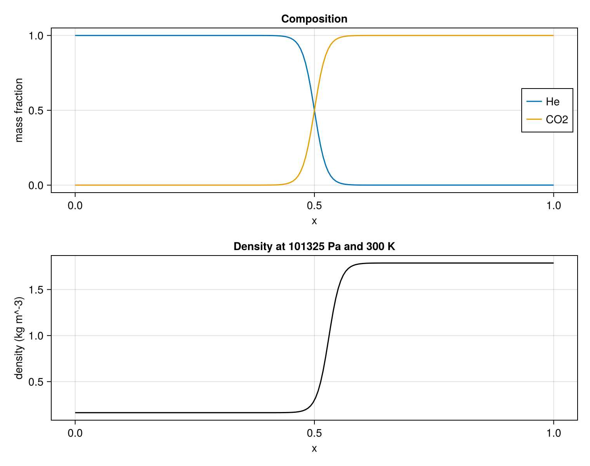

Construct a multicomponent state
A useful simulation begins with a thermodynamically consistent state. The first two tutorials used a one-species equation of state (EOS) to close the relation among pressure, density, temperature, and energy. This tutorial constructs a helium–carbon-dioxide interface at uniform pressure and temperature using the bundled NASA-9 data. No hydrodynamic evolution is needed: the figure is produced directly from the initialized conserved state.
using MPI
MPI.Initialized() || MPI.Init(threadlevel=:funneled)
using CompactLES
using CairoMakie
CairoMakie.activate!(type = "png")Select a caloric model
read_nasa9 reads piecewise heat-capacity fits and derives each species gas constant from its molar mass. Nasa9Mixture is thermally ideal, $p=\rho R_m T$, but calorically imperfect: heat capacities depend on temperature. Species order fixes the order of every mass-fraction tuple.
species = read_nasa9(["He", "CO2"])
eos = Nasa9Mixture(species)Nasa9Mixture{Float64}(Nasa9Species{Float64}[Nasa9Species{Float64}("He", 2077.26439404998, Nasa9Interval{Float64}[Nasa9Interval{Float64}(300.0, 1000.0, (0.0, 0.0, 2.5, 0.0, 0.0, 0.0, 0.0), -745.375), Nasa9Interval{Float64}(1000.0, 6000.0, (0.0, 0.0, 2.5, 0.0, 0.0, 0.0, 0.0), -745.375), Nasa9Interval{Float64}(6000.0, 20000.0, (3.39684542e6, -2194.037652, 3.080231878, -8.06895755e-5, 6.25278491e-9, -2.574990067e-13, 4.429960218e-18), 16505.1896)]), Nasa9Species{Float64}("CO2", 188.92426903630442, Nasa9Interval{Float64}[Nasa9Interval{Float64}(200.0, 1000.0, (49436.5054, -626.411601, 5.30172524, 0.002503813816, -2.127308728e-7, -7.68998878e-10, 2.849677801e-13), 2046.120126804948), Nasa9Interval{Float64}(1000.0, 6000.0, (117696.2419, -1788.791477, 8.29152319, -9.22315678e-5, 4.86367688e-9, -1.891053312e-12, 6.33003659e-16), 8244.598826804955), Nasa9Interval{Float64}(6000.0, 20000.0, (-1.544423287e9, 1.016847056e6, -256.140523, 0.0336940108, -2.181184337e-6, 6.99142084e-11, -8.8423515e-16), -7.995886405273194e6)])], [2077.26439404998, 188.92426903630442], 300.0)Define pressure, temperature, and composition
Prim requires pressure, mass fractions, and exactly one of density or temperature. When temperature is supplied, the EOS calculates density. Here the pressure and temperature are uniform while composition varies, so the density change follows solely from the mixture gas constant.
nx = 192
transition_width = 0.025
problem = Problem(
name = "helium--carbon-dioxide interface",
eos = eos,
transport = Transport(mu0 = 0.0),
domain = ((0.0, 1.0), (0.0, 1.0), (0.0, 1.0)),
bcs = ((SlipWallBC(), SlipWallBC()),
(PeriodicBC(), PeriodicBC()),
(PeriodicBC(), PeriodicBC())),
ic = (x, y, z) -> begin
Yco2 = tanh_blend(x, 0.5, transition_width)
Prim(Y = (1 - Yco2, Yco2), p = 101_325.0, T_ion = 300.0)
end,
)
numerics = Numerics(
n_global = (nx, 1, 1),
art = ArtParams(enabled = false),
filter_interval = 0,
)
solver, Q = setup(problem, numerics)(Solver(grid=192 × 1 × 1, t=0.0, step=0, cfl=0.5, metric=CartesianMetric), ConservedState{Float64}(200 × 1 × 1 × 6))Inspect the initialized conserved state
For each species, CompactLES advances the partial density $\rho Y_k$. Their sum is mixture density, so this representation preserves each species mass in the same conservative form introduced in the first tutorial. line_profile recovers mixture quantities without exposing that component layout: :rho gives the mixture density, and :Y with a species index gives a mass fraction, in the order fixed above. No evolution is run, so these profiles describe the initialized state directly.
x, density = line_profile(solver, Q, :rho)
_, Yhe = line_profile(solver, Q, :Y; species = 1)
_, Yco2 = line_profile(solver, Q, :Y; species = 2)
fig = Figure(size = (760, 600))
ax1 = Axis(fig[1, 1], xlabel = "x", ylabel = "mass fraction",
title = "Composition")
lines!(ax1, x, Yhe, label = "He")
lines!(ax1, x, Yco2, label = "CO2")
axislegend(ax1, position = :rc)
ax2 = Axis(fig[2, 1], xlabel = "x", ylabel = "density (kg m^-3)",
title = "Density at 101325 Pa and 300 K")
lines!(ax2, x, density, color = :black)
fig
The heavier molecular species has the smaller specific gas constant and is consequently denser at the same pressure and temperature. If density had been supplied instead, the EOS would have inferred temperature. Supplying both, or neither, is rejected so inconsistent initial thermodynamic data do not pass silently into the calculation.
This page was generated using Literate.jl.